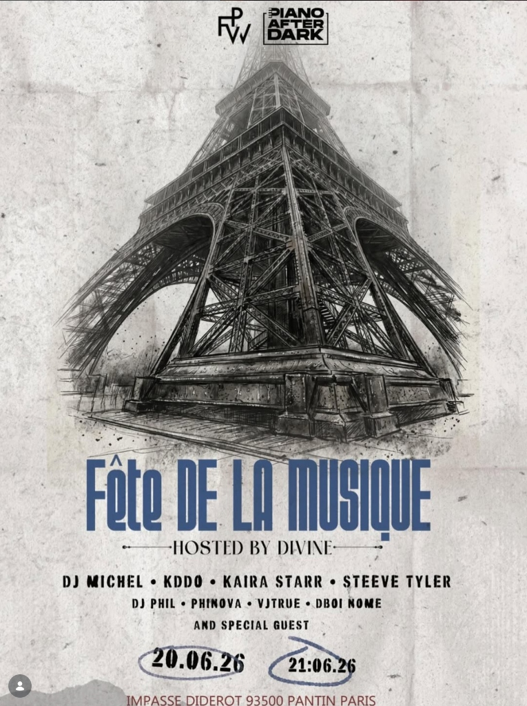

Bringing the sound of Africa to the streets of France. A massive open-air summer party in Pantin, Paris, hosted by Divine in collaboration with Piano After Dark (PVW).

We don't just host events; we build permanent cultural bridges. Partnering with Piano After Dark (PVW), 234AFRICA transformed Impasse Diderot into a two-day summer solstice celebration uniting African youth energy with European street culture.
← RETURN TO 234AFRICA MAIN PORTAL